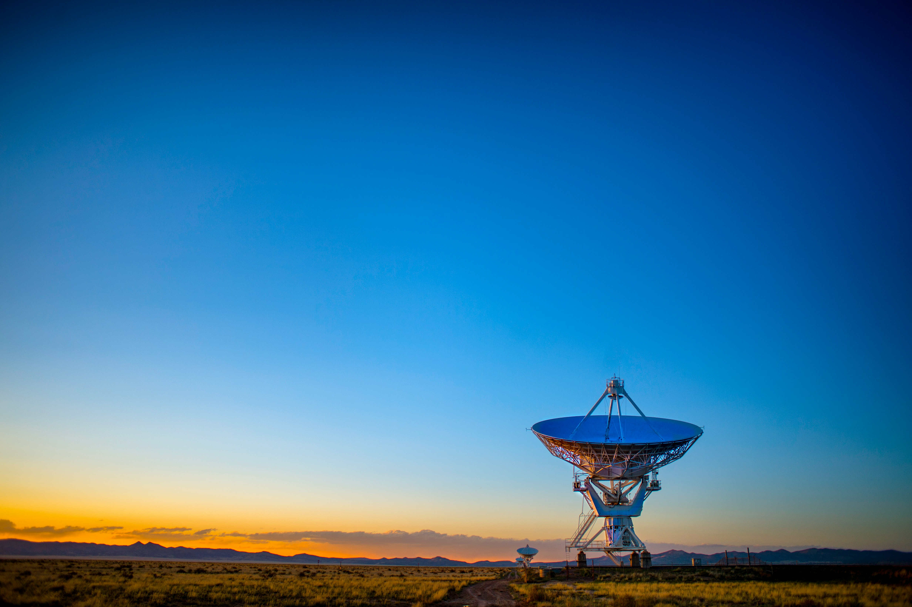

2027
2027
чемпионат по профессиональному мастерству
Профессионалы
компетенция:
Программные решения
для бизнеса
Задание
для студентов,
которые желают принять участие
Отсканируйте QR-код.
Вопросы по заданию — кабинет 202л